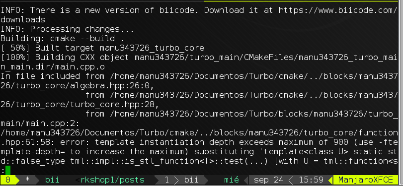

Template Metaprogramming with Modern C++: Templates in depth
The last time we learnt what metaprogramming was, how metaprogramming in C++ via templates works, and the functional spirit of the embedded language that C++ template metaprogramming is.
In this post we will learn C++ templates in depth: Class and function templates, template parameters, variadic templates, all with in depth examples.
SPOILER: Finally, there is no SFINAE explanation on this post. This has a large amount of contents to be read and understood, I think understanding correctly the template system and the different categories of template parameters is good enough for a single (But large) blog post. Of course, if there is any problem feel free to post a comment here.
The template system: Function and class templates
As we have seen in the first post, the C++ template system generates C++ types and functions from an specification written by the programmer, what we call template. And of course generating a type means generating code too, since normally C++ types are coupled to code (That’s the concept of a class).
Lets see how those templates work. First a simple template function:
1 2 3 4 5 | template<typename T> T identity( const T& e ) { return e; } |
This simple template declares a family of functions that take a value of any type T and returns it untouched. Its the runtime version of the metafunction we seen in the first post.
When the programmer uses that template:
1 | int i = identity(0); |
the compiler instantiates the template using the correct parameters, an int type parameter in this case.
Note how template parameters are inferred from the function argumentsassed to the template function. This is why when using function templates is not neccessary nor a good practice to pass template parameters explicitly. Only is needed in some cases when a parameter could not be inferred from the function arguments std::make_shared() for an example.
Exactly the same occurs for class templates: The compiler generates one type (class) and its corresponding code for each combination of template parameters.
There is one point to be noted: Its true that the compiler generates one instantation for each combination of parameters, but modern C++ compilers are smart enough to not generate executable code for templates that are not actually used in the program. Also, modern compilers perform memoization during template instantiation, which increases the performance of the template system. Both optimizations make invalid the old arargumentaying that C++ templates increase executable size. That’s not completely true, since the compiler only generates code for the things that are actually used, after optimizations like inlining, dead code elimination, etc.
See for example the classic fibonacci metafunction:
1 2 3 4 5 6 7 8 9 10 11 12 13 14 15 16 17 | template<int n> struct fibonacci { static constexpr int value = fibonacci<n-1>::value + fibonacci<n-2>::value; }; template<> struct fibonacci<0> { static constexpr value = 0; }; template<> struct Fibonacci<1> { static conexpr value = 1; }; |
This is the instantation tree for a fibonacci<5> template instance:
1 2 3 4 5 6 7 8 9 10 11 12 13 14 15 16 17 18 19 | +--------+ | fib<5> | +--------+ /\ / \ / \ / \ +--------+ +--------+ | fib<4> | | fib<3> | +--------+ +--------+ /\ /\ / ... / \ / / \ / / \ +--------+ +--------+ +--------+ | fib<3> | | fib<2> | | fib<1> | +--------+ +--------+ +--------+ /\ /\ ... ... ... ... |
That’s what you would expect, right? Ok, but that’s not what the compiler does. Enter memoization:
1 2 3 4 5 6 7 8 9 10 11 12 13 14 15 16 17 18 19 20 21 22 23 24 25 26 27 28 29 30 31 | +--------+ | fib<5> | +--------+ /\ / * / / +--------+ | fib<4> | +--------+ /\ / * / / +--------+ | fib<3> | +--------+ /\ / * / / +--------+ | fib<2> | +--------+ /\ / \ / \ / \ +--------+ +--------+ | fib<1> | | fib<0> | +--------+ +--------+ |
where * means the compiler selected the memoized (Instanced previously) template instead of doing the full instantation again.
Then the fact that the compiler only generates code which actually does something (All syntactic sugar that high-level constructs provide is thrown away):
1 2 3 4 | int main() { return Fibonacci<5>::value; } |
GCC 4.9 -std=c++11 -O0 x86 target:
1 2 3 4 | main: # @main movl $55, %eax movl $0, -4(%rsp) ret |
Only a hardcoded 55. Do you see code bloating there?
Template parameters
C++ templates can take three kinds of parameters: Value parameters, type parameters, and template template parameters. There are more categories (References, pointers, etc) but they are not as interesting as the former from the metaprogramming point of view. Here we will see them in depth.
Value parameters
First of all, C++ templates can take parameters that are integral values known at compile time. Say a char, an unsigned int, a long int, etc. The fibonacci example above is one case of template with value parameters only, an int in that case.
Lets see a more complex example to introduce you to modern C++ features: Imagine a metafunction that given a character c and a size n generates a string containing the n consecutive characters starting at c, name it build_string:
1 2 3 4 | template<char c , std::size_t n> struct build_string { }; |
Whats the return type of build_string? A string, of course. But we need a compile-time string. One way to represent strings at compile-time is using C++11 variadic templates:
1 2 3 4 5 6 7 8 9 10 11 12 13 14 | template<char... Cs> struct string { static constexpr std::array<char,sizeof...(Cs)+1> value = {Cs...,'\0'}; constexpr operator const char*() { return value.data(); } operator std::string() const { return std::string{value.data()}; } }; |
The string template is only a variadic pack of chars, but also has a value member array. That’s allows us to get the characters at runtime. Note how the array is initialized at compile-time from the char pack.
Given the string template, we can build up a string recursively:
1 2 3 4 5 6 7 8 9 10 11 12 13 14 15 16 17 18 19 20 | template<char c , std::size_t n> struct build_string { template<std::size_t count , typename STRING> struct build_string_impl; template<std::size_t count , char... Cs> struct build_string_impl<count,string<Cs...>> { using result = typename build_string_impl<count-1,string<c+count,Cs...>>::result; }; template<char... Cs> struct build_string_impl<0,string<Cs...>> { using result = string<c,Cs...>; }; using result = typename build_string_impl<n,string<>>::result; }; |
Using C++14 variable templates one can improve the syntax to get the char array a bit:
1 2 | template<char c , std::size_t n> constexpr std::array<char,n+1> build_string_array = build_string<c,n>::result::value; |
How beautiful is to see a hardcoded "abc" string injected in your assembly, isn’t?
See for yourself.
Value parameters, variadic templates, constexpr variadic-pack based initialization, C++14 variable templates… So far so good. Enter type parameters.
Type parameters
As the name says, are parameters that represent types. The canonical example is a container template:
1 2 3 4 5 | template<typename T> class vector { ... }; |
One useful template is the typelist: A typelist represents a set (list) of types. This simple template is very powerfull since it allows us to hold and manipulate a set of types.
Imagine you want to know if a type T is an integer type. What would you do? A simple approach is to store the set of known integral types on a list, and later
search if the type we are asking is on that list:
1 2 3 4 5 6 7 8 9 10 11 12 13 14 15 16 17 18 19 20 21 22 23 24 25 26 27 28 29 30 31 32 33 34 | //The typelist template template<typename... Ts> struct list{}; //A metafunction returning the index of a type T in a list of types L. If T doesn't belong to L, it returns -1 template<typename T , typename L> struct index_of; //Again that recursive head:tail traversal of functional languages template<typename T , typename HEAD , typename... TAIL> struct index_of<T,list<HEAD,TAIL...>> { static constexpr int next_value = index_of<T,TAIL...>;::value; static constexpr int value = next_value >= 0 ? next_value + 1 : -1; //Propagate the -1 or the index }; //First base case: The type is found (T matches HEAD) template<tyename T , typename... TAIL> struct index_of<T,list<T,TAIL...>> { static constexpr int vaue = 0; }; //Second base case: The type is not found (There are no more types on the list to match with) template<typename T> struct index_of<T,list<>> { static constexpr int value = -1; }; //A type T is integral if its found on a list containing all the integral types template<typename T> struct is_integral : public std::integral_constant<bool, index_of<T,list<short,int,long,etc...>>::value >= 0>;; {}; |
This thing (Storing a typelist of integral types and searching on it) is exactly what the libc++ Standard Library implementation does to implement the std::is_integral type trait. GCC’s stdlibc++ on the other hand uses explicit template specializations, one for each integral type.
Also, always be careful when writing and using that recursive metafunctions. The compiler has some limits, and breaking them could lead to some horrible errors like this:
And thats only the header of the error, it was really two hundreds of lines long. Remember that “Template instantiation depth reached max of X” error. Will be one of your best friends when doing template metaprogramming.
Template-template parameters
The last category is also the poor known category of template parameters, possibly because its ugly syntax.
A template-template parameter its a C++ template parameter which represents not a type nor a value, but a template itself:
1 2 | template<template<typename> class T> struct foo{}; |
foo is a template expecting a template with one type parameter only. So foo can take something like this bar as template parameter:
1 2 3 4 | template<typename T> struct bar{}; using foo_instance = foo<bar>; |
Its possible to write a template that can take any kind of template? No. Thats the reason why we encouraged the use of type parameters only for template metaprogramming during the first post. If we only use type parameters, doing that its easy thanks to variadic templates:
1 2 | template<typename...> class T> struct universal_template{}; |
If you follow our coding convention, that universal_template could take any kind of template, metafunction, etc we have. During Turbo development I followed that convention, and used box types for values (With types like std::integral_constant) and templates (With a template similar to that universal_template). The equivalent template was called tml::lazy from the fact that its primarily used for delayed and lazy template instantation:
1 2 3 4 5 6 7 8 9 10 11 | template<typename T> struct unary{}; template<typename LHS , typename RHS> struct binary{}; using unary_t = tml::lazy<unary>; //Its no more a template but a type using binary_t = tml::lazy<binary>; using unary_instance = tml::eval<unary_t,int> //Instaintiates the "template" unary_t with int as parameter, //so unary_instance is unary |
As you can see, template-template parameters are very powerful ones, since they can convert templates into types, leading to many use cases. The best of all I think, they are the template metaprogramming equivalent of functors:
1 2 3 4 5 6 7 8 9 10 11 12 13 14 15 16 | //A simple comparison metafunction template<typename LHS , typename RHS> struct less { using result = std::integral_constant<bool, (sizeof(LHS) < sizeof(RHS))>; }; //Returns the minimal type given a comparison criteria (less by default) template<typename LHS , typename RHS> struct min { using result = typename std::conditional<tml::eval<COMPARER,LHS,RHS>::value, LHS, RHS >::type; }; |
Summary of template metaprogramming in depth
- Modern C++ compilers are smart enough to optimize the output of the template system and the execution of the template system itself. Beware of modern compiler capabilites, don’t tie yourself to old speaks. There are template-related problems, of course, but these are usually not. By default, there is no exponential and mind blowing executable size increase.
- There are three categories of template arguments, each with their own use cases and properties. Combine them to have a powerful template metaprogramming toolbox.
Don’t be afraid if you haven’t understood some of the examples provided here. They are not intended to be simple, but to show use cases of template metaprogramming. Do you want to understand them completely? Come to the workshops next week!

Related Posts
Pingback: C++ wants Lisp macros | Smash Company()
Pingback: C/C++ Madrid meetup @ biicode | biicode Blog()